1. Concurrency is not Parallelism
2. Sequential x concurrency x parallelism
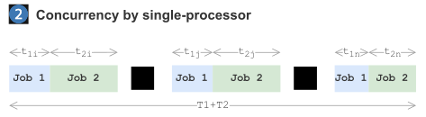
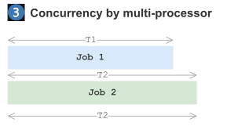
3. Why is concurrency hard?
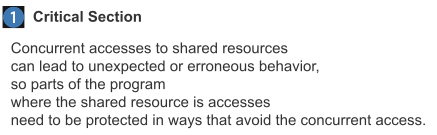
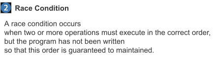
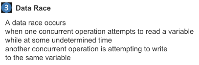
4. Critical section x race condition x data race
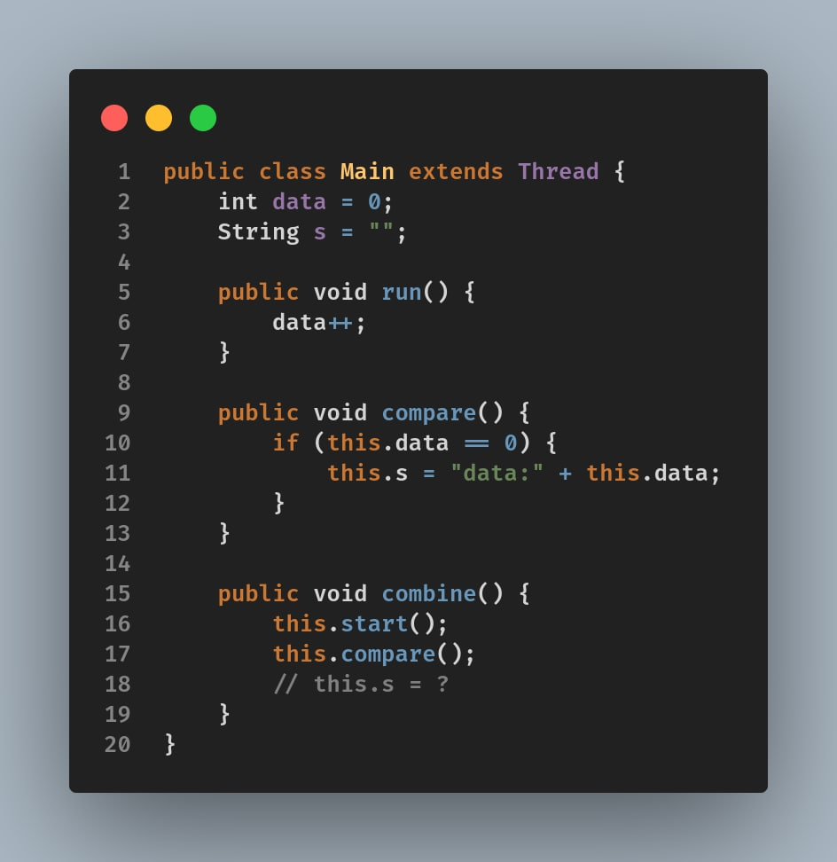
5. this.s is unpredictable
6. Atomicity
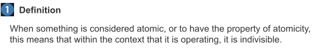
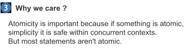
7. Memory Access Synchronization?
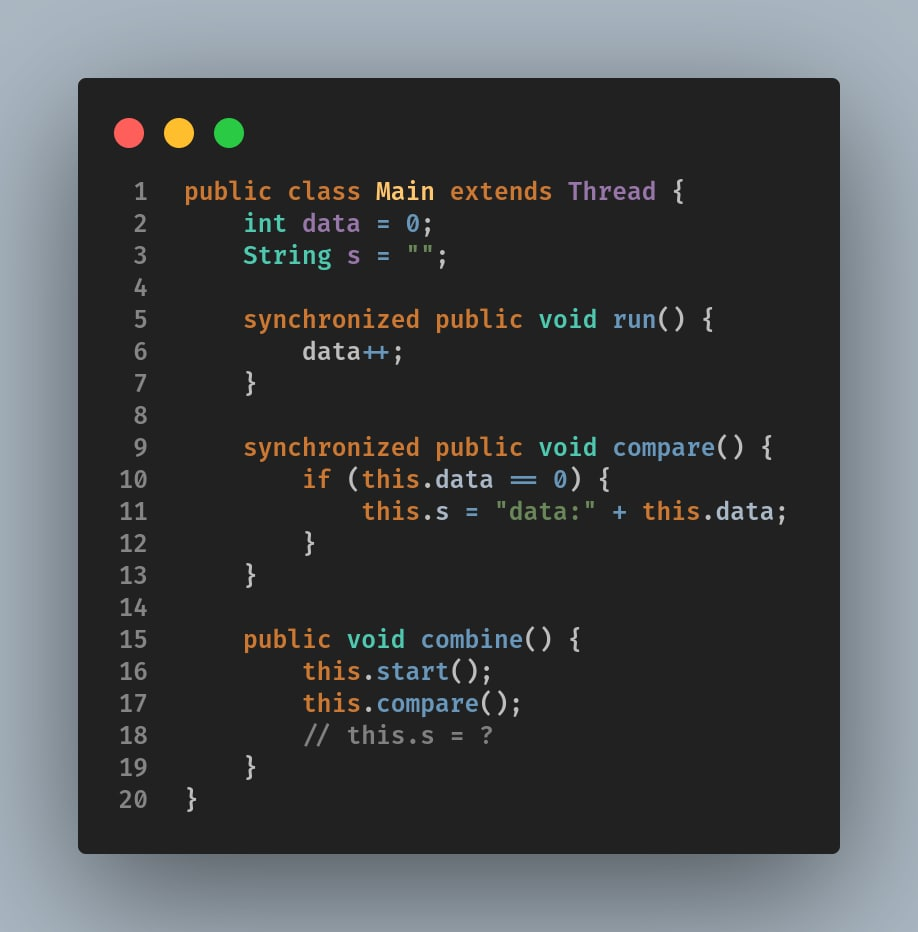
8. Deadlock, livelock and starvation
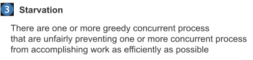
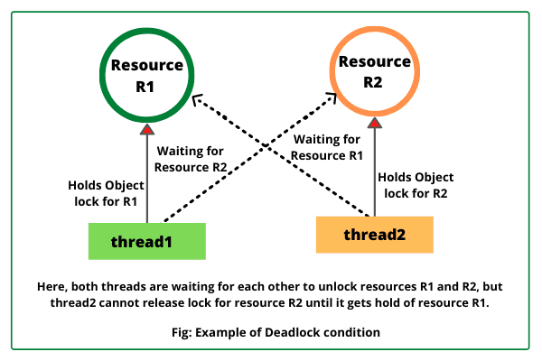